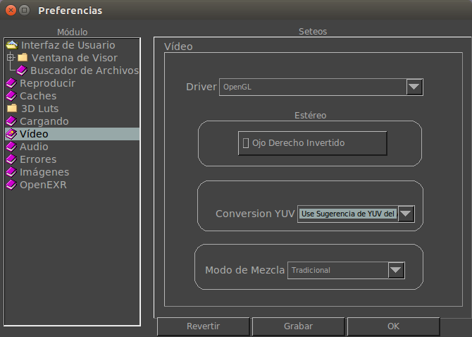

La ficha de Preferencias de Video te permite configurar como funciona el video.

Driver
Aquí puedes cambiar el driver por defecto cuando mrViewer arranca. Por ahora, el unico driver es OpenGL.
Stereo
Aquí puedes setear el comportamiento por defecto de imágenes en estereo. Actualmente solo Red-Cyan Anaglificos son soportados.
Modo de Mezcla
Aqui puedes setear el comportamiento por defecto cuando se compone una imagen de frente sobre otro fondo o película. El modo Tradicional mezcla imágenes con la siguiente formula: FR*alfa + (1-alfa)*FD
La opción Premultiplicado mezcla la imagen como si el alfa ya esta premultiplicado, como: FR + (1-alfa)*FD
donde FR son los canales rgb de la imagen de frente, alfa es su canal alfa y FD son los canales rgb de la imagen de fondo. Nótese que esta multiplicación sucede DESPUES de la correción de gama, por lo que puede dejar una leve franja brillante alrededor de los bordes.
El metodo Tradicional Sin Gamma divide (unpremult) por el canal alfa antes de la corrección de gama
y lo premultiplica despues. Luego usa el método tradicional para componer la imagen.
El metodo Premultiplicar Sin Gamma divide (unpremult) por el canal alfa antes de la corrección de gama
y lo premultiplica despues. Luego usa el método premultiplicado para componer la imagen.